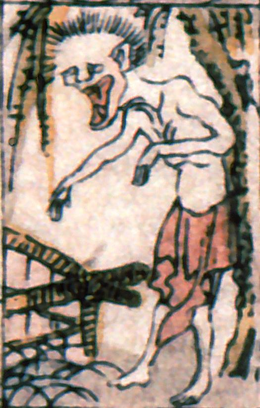

柳の下に立つ化物。半裸で色が白く、頭髪が抜け落ちている。両手を前に垂らし、口を大きく開けている。墓場の亡者か。
著作者：叢豊丸／出典：親書誌：A5_pushkin_0018：新板化物尽；シンバンバケモノツクシ／日付：2011／資源識別子：A5_pushkin_0018_0010_0000
Copyright (c)2010- International Research Center for Japanese Studies, Kyoto, Japan. All rights reserved.